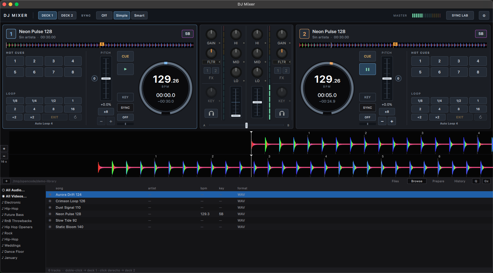
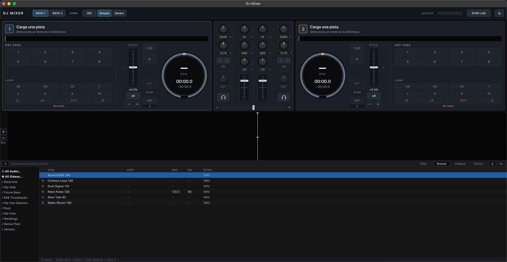
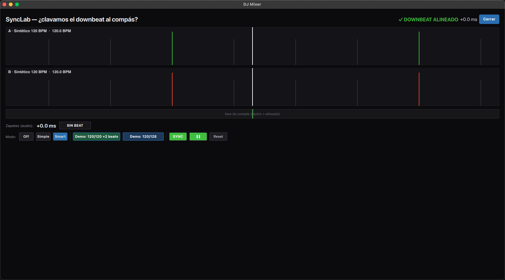
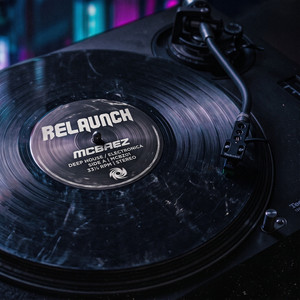

O DJMixer é uma aplicação de DJ nativa (C++17 + Qt 6) construída do zero por uma equipe de agentes de IA com um humano no comando. Não é um wrapper web, não é uma maquete: é um motor de áudio em tempo real cujo caminho de loop não aloca memória.
A versão Lite é lançada gratuita para todo mundo e continua assim. Sem preço, sem mensalidade, sem assinatura, sem trial que expire. Não é promoção de lançamento: é a razão de existir do projeto - para que qualquer DJ que queira ser DJ comece sem pagar mensalidades nem comprar software caro.
Existirá uma versão Pro paga, para o que um DJ precisa quando cresce (stems, gravação, DVS, análise harmônica avançada) e nunca para o essencial de misturar.
O compromisso está versionado no repositório (docs/promise.md) e prevalece sobre qualquer outro texto. O código fonte completo sai com o primeiro binário: é uma exigência da GPL, não promessa de marketing.

Dois decks com a mesma faixa: 129,26 BPM detectados, tonalidade 5B em Camelot, 8 hot cues por deck, auto-loops sobre o beatgrid, EQ de 3 bandas + filtro + FX por canal e o waveform RGB com os marcadores de beat. Áudio sintético de demonstração.

A biblioteca analisa sozinha: BPM e tonalidade de cada faixa, com cache em disco.

SyncLab: o motor de sincronização com o downbeat de cada deck, a fase do compasso e o desvio medido em milissegundos. No demo sintético fica em +0,0 ms.
O que existe construído, e como. As specs completas estão em specs/, com plano, tarefas e contratos.
| Área | Estado | Detalhe técnico |
|---|---|---|
| Engine de áudio | Pronto | Thread de callback sem locks e sem tocar a UI. O caminho de loop não aloca memória; o caminho geral de playback realoca o buffer quando muda o número de amostras. Cache de PCM, seqlock, filas SPSC. 48 kHz. |
| Decks | Pronto | 2 decks + crossfader, cue, seek, PFL, 8 hot cues por deck com sidecar .hotcues persistente. |
| Tempo | Pronto | Pitch/tempo, modo vinil, pitch-bend contínuo, key lock (tempo sem mudar o tom). |
| Key lock | Pronto | Motor Rubber Band (GPL-2.0-or-later) em realtime, com crossfade de entrada e saída. O protótipo de WSOLA próprio foi descartado. |
| Key | Pronto | Detecção de tonalidade com nomenclatura Camelot, cacheada por faixa. |
| Beats | Em validação | Detecção de BPM e downbeat, beatgrid, importação de grids do Serato. O detector automático segue em validação contra faixas reais. |
| Loops | Pronto | Auto-loops 1/8…16 beats sobre o beatgrid, resize diferido (nunca a quente). |
| Sync | Pronto | Correção de fase, compensando a latência audível do key lock. SyncLab para inspecionar o downbeat em ms. |
| Mixer | Pronto | EQ de 3 bandas, filtro, FX por canal, isolator, VU master. |
| Waveform | Pronto | RGB com detalhe a 200 buckets/s, overview em cor, zoom 2–64 s. |
| Scratch | Pronto | Contínuo, sem granulação audível. |
| MIDI | Pronto | Mapeamento completo, sensibilidade de jog, pitch-bend. |
| Decodificação | Pronto | MP3, FLAC, AAC, MP4/M4A, Opus (AV1+Opus por stream-copy). |
O que ainda não funciona está escrito, não escondido. A detecção automática de beats segue em validação contra faixas reais; o site diz isso na mesma frase em que diz o que funciona.
O humano por trás deste projeto é um DJ, e o primeiro lançamento dele vem inteiro na versão Lite - grátis, para todo mundo, para sempre. Você instala o software e leva o disco.

O projeto de software e o projeto musical são o mesmo: as funções determinísticas com as quais um DJ julga software de verdade - beat matching que cai na grade, scratch sem granulação, trim e nível que aterram onde a mão espera - são as que estão sendo treinadas. Por isso o álbum vai junto: não é um chamariz de DAYPASS, é a razão de a ferramenta existir.
Se você escuta uma vez, isso é uma reprodução. Se gostar, é um like. E se você é DJ, McDiscJockey é o canal onde isso continua.
O gargalo real é a capacidade de modelos de IA.
A equipe de engenharia são quatro agentes de IA (CTO, Coder, QA, Growth). Cada decisão de motor, cada estudo de referência e cada iteração de testes custa tokens. É isso que trava o lançamento - e é o que pedimos ajuda para.
Rede Stellar (Soroban) · USDC nativo da Circle. A conta é multisig 2-de-6: receber não exige assinatura, então as doações entram na hora.
Antes de enviar, confira os 6 primeiros e 6 últimos caracteres (GATED25 … DC7NO7) e mande primeiro um valor pequeno de teste.
Capacidade de modelos para a equipe de agentes, um MIDI controller para validar com hardware real e a conta Apple Developer (99 USD/ano) para o download sair assinado e sem o aviso do Gatekeeper.
GitHub Sponsors e Patreon abrem com a primeira doação. A Lite é grátis de qualquer jeito: não doar não te coloca numa lista de recursos menor.
A Lite é lançada com o álbum completo de McBaez, grátis. O projeto de software e o projeto musical são o mesmo.
Isto é uma doação, não um investimento. Sem token, sem participação, sem promessa de retorno. Doações podem ser income tributável para quem doa (no Chile, SUNAT) - cada doador deve consultar seu contador; o projeto não dá orientação tributária.
Um humano (engenheiro de software chileno, amante da música) e quatro agentes de IA orquestrados com Paperclip: CTO, Coder, QA e Growth. Todo o histórico, as specs e a suíte de testes estão no repositório; os números vivos estão em specs/INDEX.md e ctest -N.
O repositório do código é privado até o primeiro lançamento. O que é público hoje: este site, as capturas, as notas de desenvolvimento e as especificações.